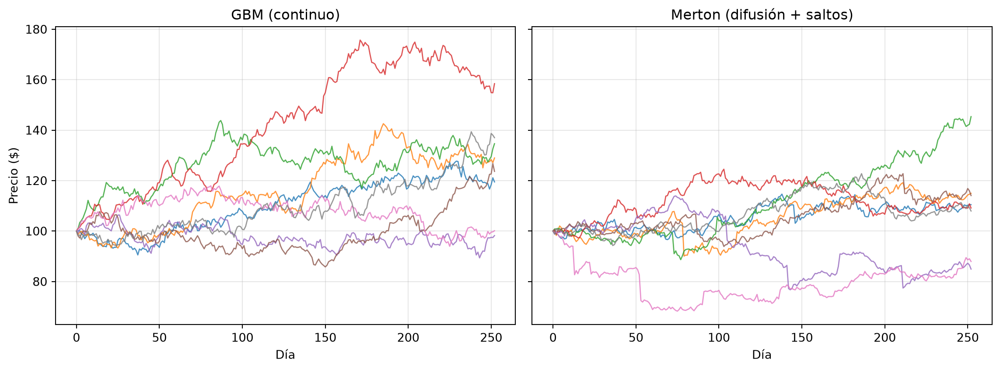
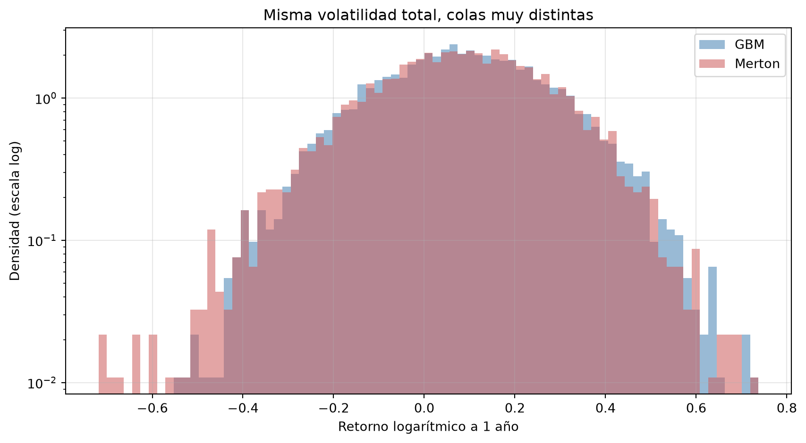

import numpy as np
import matplotlib.pyplot as plt
from scipy import stats
rng = np.random.default_rng(42)14 Capítulo 14: Procesos Estocásticos del Precio de un Activo
Más allá del Browniano: saltos, Lévy y colas gruesas
Resumen
El Movimiento Browniano Geométrico es elegante pero miente en lo importante: sus retornos son normales, sin saltos y con colas finas, mientras que los mercados reales se desploman de a saltos y tienen colas pesadas. Extendemos el modelo con el jump-diffusion de Merton, presentamos la familia de procesos de Lévy, y comparamos las distribuciones de retornos simuladas contra el GBM y contra la firma estadística de los datos reales.
15 Introducción
En el capítulo anterior simulamos precios con el Movimiento Browniano Geométrico y todo funcionó de maravilla. Ahora toca la pregunta incómoda: ¿el GBM describe bien los precios reales?
La respuesta corta es no en las colas. Los retornos reales exhiben tres características —los hechos estilizados que ya asomaron en el Capítulo 7— que el GBM no puede producir:
- Colas pesadas: los movimientos extremos ocurren muchísimo más seguido de lo que predice la normal. El crash de 1987 (−20% en un día) tiene, bajo normalidad, una probabilidad tan pequeña que no debería haber ocurrido ni una vez en la edad del universo. Ocurrió un martes.
- Saltos: los precios no se mueven solo en pasitos continuos; a veces saltan — un resultado electoral, un default, un anuncio de la Fed. El GBM, por construcción, tiene trayectorias continuas.
- Asimetría: las caídas violentas son más frecuentes y más grandes que las subas violentas.
Este capítulo construye modelos que sí capturan esto, quedándonos en el terreno de modelar el precio del activo (la volatilidad estocástica, que ataca otro hecho estilizado, llega en el Capítulo 20 con Heston y SABR).
16 El diagnóstico: qué le falta al GBM
Antes de proponer modelos nuevos, midamos la falla del viejo. Comparemos los retornos diarios de un GBM contra una serie con “días de shock” ocasionales (nuestra maqueta de los datos reales):
n_dias = 2500 # ~10 años
# GBM: retornos log normales puros
ret_gbm = rng.normal(0.0004, 0.012, n_dias)
# "Mercado real" estilizado: normal + shocks ocasionales grandes y sesgados a la baja
shocks = rng.random(n_dias) < 0.02 # ~5 shocks por año
ret_real = np.where(shocks,
rng.normal(-0.02, 0.035, n_dias), # días de salto
rng.normal(0.0006, 0.009, n_dias)) # días normales
print(f"{'':22}{'GBM':>10}{'Mercado real':>14}")
print(f"{'Volatilidad diaria':<22}{ret_gbm.std():>10.4f}{ret_real.std():>14.4f}")
print(f"{'Asimetría':<22}{stats.skew(ret_gbm):>10.2f}{stats.skew(ret_real):>14.2f}")
print(f"{'Curtosis (exceso)':<22}{stats.kurtosis(ret_gbm):>10.2f}{stats.kurtosis(ret_real):>14.2f}")
print(f"{'Peor día':<22}{ret_gbm.min():>10.2%}{ret_real.min():>14.2%}") GBM Mercado real
Volatilidad diaria 0.0121 0.0107
Asimetría -0.04 -1.52
Curtosis (exceso) 0.04 11.96
Peor día -4.34% -10.68%Misma volatilidad total, pero el “mercado real” tiene curtosis alta, asimetría negativa y días mucho peores. Un gestor de riesgo que use el GBM para estimar el VaR de esta serie va a subestimar sistemáticamente las colas — el pecado capital del Capítulo 11.
17 Jump-diffusion de Merton: difusión + saltos de Poisson
En 1976, Robert Merton (sí, el mismo de Black-Scholes y de LTCM — la historia tiene ironías) propuso la extensión natural: superponer al Browniano un proceso de saltos. El precio evoluciona como un GBM casi todo el tiempo, pero en momentos aleatorios llega un shock discreto:
\[\frac{dS}{S} = \mu\, dt + \sigma\, dW + (J - 1)\, dN\]
Los tres ingredientes:
- \(\mu\,dt + \sigma\,dW\): la difusión de siempre (tendencia + ruido fino).
- \(dN\): un proceso de Poisson con intensidad \(\lambda\) — el “timbre” que suena en promedio \(\lambda\) veces por año, avisando que llegó un salto.
- \(J\): el tamaño del salto, aleatorio; Merton lo modela lognormal: \(\ln J \sim N(\mu_J, \sigma_J^2)\). Con \(\mu_J < 0\), los saltos son mayormente caídas.
TipLa intuición del Poisson
El proceso de Poisson es el modelo matemático de “eventos raros que llegan de sorpresa”: no sabés cuándo llega el próximo salto, pero sí cada cuánto llegan en promedio. Con \(\lambda = 5\), esperás unos 5 saltos por año, quizás 2 este año y 8 el próximo. Es el mismo objeto que modela llegadas de clientes o fallas de máquinas — acá modela pánicos y sorpresas.
17.1 Simulación
Discretizar es directo: en cada paso, la difusión avanza como siempre, y además sorteamos cuántos saltos ocurrieron en el intervalo (casi siempre 0, a veces 1):
def simular_merton(S0, mu, sigma, lam, mu_J, sigma_J, T, n_pasos, n_sims, rng):
"""Jump-diffusion de Merton. Devuelve la matriz de precios (pasos+1, sims)."""
dt = T / n_pasos
# Compensador: resta el efecto medio de los saltos para que el drift total sea mu
k = np.exp(mu_J + 0.5 * sigma_J**2) - 1
S = np.empty((n_pasos + 1, n_sims))
S[0] = S0
for t in range(1, n_pasos + 1):
Z = rng.standard_normal(n_sims)
# ¿Cuántos saltos en este intervalo? (Poisson con media lambda*dt)
n_saltos = rng.poisson(lam * dt, n_sims)
# Suma de log-saltos (si hubo más de uno, se acumulan)
log_J = np.where(n_saltos > 0,
rng.normal(mu_J * n_saltos, sigma_J * np.sqrt(np.maximum(n_saltos, 1))),
0.0)
S[t] = S[t-1] * np.exp((mu - lam * k - 0.5 * sigma**2) * dt
+ sigma * np.sqrt(dt) * Z + log_J)
return S
# Parámetros: difusión tranquila + ~4 saltos por año, mayormente caídas del ~3%
S0, mu, sigma = 100, 0.10, 0.15
lam, mu_J, sigma_J = 4, -0.03, 0.05
T, n_pasos, n_sims = 1.0, 252, 5000
S_merton = simular_merton(S0, mu, sigma, lam, mu_J, sigma_J, T, n_pasos, n_sims, rng)
# GBM de referencia con la MISMA volatilidad total, para comparar peras con peras
var_saltos = lam * (mu_J**2 + sigma_J**2)
sigma_total = np.sqrt(sigma**2 + var_saltos)
Z = rng.standard_normal((n_pasos, n_sims))
S_gbm = np.empty((n_pasos + 1, n_sims))
S_gbm[0] = S0
dt = T / n_pasos
for t in range(1, n_pasos + 1):
S_gbm[t] = S_gbm[t-1] * np.exp((mu - 0.5 * sigma_total**2) * dt
+ sigma_total * np.sqrt(dt) * Z[t-1])
print(f"Vol. anual de la difusión: {sigma:.0%}")
print(f"Vol. anual aportada por saltos: {np.sqrt(var_saltos):.1%}")
print(f"Vol. total (ambos modelos): {sigma_total:.1%}")Vol. anual de la difusión: 15%
Vol. anual aportada por saltos: 11.7%
Vol. total (ambos modelos): 19.0%fig, axes = plt.subplots(1, 2, figsize=(12, 4.5), sharey=True)
for ax, S, titulo in [(axes[0], S_gbm, "GBM (continuo)"),
(axes[1], S_merton, "Merton (difusión + saltos)")]:
ax.plot(S[:, :8], alpha=0.8, linewidth=1)
ax.set_title(titulo)
ax.set_xlabel("Día")
ax.grid(True, alpha=0.3)
axes[0].set_ylabel("Precio ($)")
plt.tight_layout()
plt.show()
Se ve a simple vista: las trayectorias del GBM son “peludas pero suaves”; las de Merton muestran escalones — el precio de pronto está en otro lado, sin pasar por el medio. Así se ve un evento de riesgo real.
17.2 La firma en las distribuciones
La diferencia decisiva está en la distribución de los retornos:
ret_m = np.log(S_merton[-1] / S0)
ret_g = np.log(S_gbm[-1] / S0)
fig, ax = plt.subplots(figsize=(9, 5))
bins = np.linspace(min(ret_m.min(), ret_g.min()), max(ret_m.max(), ret_g.max()), 80)
ax.hist(ret_g, bins=bins, density=True, alpha=0.55, label="GBM", color="steelblue")
ax.hist(ret_m, bins=bins, density=True, alpha=0.55, label="Merton", color="indianred")
ax.set_yscale("log") # escala log para VER las colas
ax.set_xlabel("Retorno logarítmico a 1 año")
ax.set_ylabel("Densidad (escala log)")
ax.set_title("Misma volatilidad total, colas muy distintas")
ax.legend()
ax.grid(True, alpha=0.3)
plt.tight_layout()
plt.show()
print(f"{'':24}{'GBM':>10}{'Merton':>10}")
print(f"{'Asimetría':<24}{stats.skew(ret_g):>10.2f}{stats.skew(ret_m):>10.2f}")
print(f"{'Curtosis (exceso)':<24}{stats.kurtosis(ret_g):>10.2f}{stats.kurtosis(ret_m):>10.2f}")
print(f"{'Percentil 1%':<24}{np.percentile(ret_g, 1):>10.2%}{np.percentile(ret_m, 1):>10.2%}")
GBM Merton
Asimetría 0.01 -0.19
Curtosis (exceso) -0.09 0.22
Percentil 1% -36.24% -39.69%La escala logarítmica del eje y revela lo que el histograma común esconde: la cola izquierda de Merton se extiende mucho más lejos con probabilidad no despreciable. Ambos modelos tienen la misma varianza — un optimizador de Markowitz los vería idénticos — pero el VaR y el ES del 1% son muy distintos. Esta es la materialización de la lección de 2008 del capítulo anterior: media y varianza no cuentan la historia de las colas.
18 Procesos de Lévy: la familia general
El Browniano y el Poisson comparten una propiedad estructural: incrementos independientes y estacionarios (lo que pasa hoy no depende de ayer, y las reglas del juego no cambian con el tiempo). La familia completa de procesos con esa propiedad son los procesos de Lévy, y hay un teorema hermoso (Lévy-Itô) que dice que todo proceso de Lévy se descompone en exactamente tres partes:
\[X_t = \underbrace{bt}_{\text{tendencia}} + \underbrace{\sigma W_t}_{\text{difusión}} + \underbrace{\text{saltos}}_{\text{grandes y pequeños}}\]
Es decir: tendencia + Browniano + saltos es todo lo que puede haber (bajo incrementos independientes). El GBM usa solo las dos primeras piezas; Merton agrega saltos “raros y grandes”; y otros miembros de la familia usados en la industria empujan la idea más lejos:
- Variance Gamma (VG): infinitos saltos pequeños y ninguna difusión — el precio se mueve solo por saltitos. Se construye elegantemente como un Browniano evaluado en un “reloj aleatorio” (subordinador Gamma): el tiempo del mercado corre más rápido en días agitados.
- Normal Inverse Gaussian (NIG), CGMY: variantes con más control fino sobre el peso de cada cola.
# Variance Gamma por subordinación: Browniano en "tiempo de mercado" aleatorio
def simular_vg(theta, sigma_vg, nu, T, n_pasos, n_sims, rng):
"""Retornos log acumulados de un proceso Variance Gamma."""
dt = T / n_pasos
# El reloj aleatorio: incrementos Gamma con media dt y varianza nu*dt
dG = rng.gamma(shape=dt / nu, scale=nu, size=(n_pasos, n_sims))
# Browniano con drift evaluado en ese reloj
dX = theta * dG + sigma_vg * np.sqrt(dG) * rng.standard_normal((n_pasos, n_sims))
return dX.sum(axis=0)
ret_vg = simular_vg(theta=-0.10, sigma_vg=0.18, nu=0.4, T=1.0,
n_pasos=252, n_sims=5000, rng=rng)
print("Retornos a 1 año — Variance Gamma vs. GBM:")
print(f"{'':24}{'GBM':>10}{'VG':>10}")
print(f"{'Asimetría':<24}{stats.skew(ret_g):>10.2f}{stats.skew(ret_vg):>10.2f}")
print(f"{'Curtosis (exceso)':<24}{stats.kurtosis(ret_g):>10.2f}{stats.kurtosis(ret_vg):>10.2f}")Retornos a 1 año — Variance Gamma vs. GBM:
GBM VG
Asimetría 0.01 -0.58
Curtosis (exceso) -0.09 1.43
Nota¿Por qué molestarse con estos modelos?
Porque el uso profesional los exige en dos frentes. Riesgo: un VaR/ES calculado con colas realistas (Capítulo 11 + este) es la diferencia entre estar preparado o no. Derivados: las opciones fuera del dinero cotizan “caras” respecto de Black-Scholes precisamente porque el mercado sí les pone precio a los saltos; los modelos de Lévy reproducen ese patrón (la sonrisa de volatilidad, que formalizamos en el Módulo 4).
19 ¿Qué modelo usar? Un mapa
| Modelo | Colas | Saltos | Costo | Cuándo usarlo |
|---|---|---|---|---|
| GBM | Finas (normal) | No | Trivial | Primer boceto; horizontes largos donde el promedio manda |
| Merton | Pesadas | Sí, raros y grandes | Bajo | Riesgo de eventos; activos expuestos a anuncios/default |
| Variance Gamma / NIG | Pesadas, control fino | Infinitos, pequeños | Medio | Calibración fina a opciones; alta frecuencia |
| Heston / SABR (Cap. 20) | Pesadas vía vol estocástica | Opcional | Medio-alto | Superficies de volatilidad; pricing de exóticos |
La regla general del oficio: el modelo correcto depende de la pregunta. Para proyectar la jubilación a 30 años, el GBM alcanza. Para calcular el ES al 99% de un book de opciones vendidas, usar GBM es negligencia.
20 Errores comunes
AdvertenciaTrampas frecuentes
- Olvidar el compensador (\(-\lambda k\, dt\)) en Merton: sin él, los saltos negativos sesgan el drift y la media simulada no coincide con la teórica.
- Calibrar los saltos con datos tranquilos: si la muestra histórica no contiene crisis, el estimador de \(\lambda\) será ~0 y el modelo degenera en GBM. Los parámetros de salto suelen calibrarse con opciones (forward-looking), no solo con historia.
- Comparar modelos con distinta varianza total: para aislar el efecto de forma (colas, asimetría), igualá la varianza como hicimos acá; si no, confundís “más riesgo” con “riesgo distinto”.
- Confundir curtosis muestral con poblacional: la curtosis estimada con pocas observaciones de un proceso con saltos es tremendamente ruidosa (¡depende de cuántos saltos cayeron en tu muestra!).
21 Ejercicios Propuestos
ImportanteEjercicios
- ES bajo saltos: calculá el Expected Shortfall al 99% a 1 año bajo GBM y bajo Merton (misma varianza total). ¿Qué error porcentual comete el GBM?
- Sensibilidad a λ: barré \(\lambda \in \{1, 4, 12\}\) (manteniendo la varianza total constante ajustando \(\sigma\)) y graficá la curtosis de los retornos resultantes.
- Detección de saltos: con los retornos diarios simulados de Merton, proponé una regla simple para detectar los días de salto (p. ej., \(|r| > 4\sigma_{\text{difusión}}\)) y medí su tasa de aciertos contra los saltos verdaderos.
- Datos reales: bajá 10 años de retornos diarios de un índice, calculá asimetría, curtosis y el peor día, y compará contra lo que produce un GBM calibrado a su media y varianza. ¿Cuántos “días imposibles” (>4σ) encontrás?
- VG vs. Merton: superponé los histogramas (en escala log) de retornos a 1 año de VG y Merton calibrados a la misma varianza. ¿En qué se diferencian sus colas?
Podés resolver estos ejercicios acá mismo: la celda ejecuta Python en tu navegador, sin instalar nada (la primera ejecución tarda unos segundos mientras carga el entorno; los paquetes que importes se instalan solos).
22 Referencias
Cont, Rama, y Peter Tankov. 2004. Financial Modelling with Jump Processes. Chapman & Hall/CRC.
Madan, Dilip, Peter Carr, y Eric Chang. 1998. «The Variance Gamma Process and Option Pricing». European Finance Review 2 (1): 79-105.
Mandelbrot, Benoit. 1963. «The Variation of Certain Speculative Prices». The Journal of Business 36 (4): 394-419.
Merton, Robert C. 1976. «Option Pricing when Underlying Stock Returns Are Discontinuous». Journal of Financial Economics 3 (1-2): 125-44.